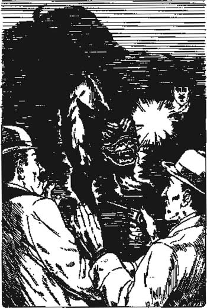

Listen to Part 1:
13

Con chó săn của dòng họ Baskerville
Hôm sau, Holmes thức dậy từ sáng sớm. Ông đến làng Grimpen và gửi điện tín. Khi quay trở về tòa lâu đài Baskerville, ông tỏ ra rất phấn khích. 'Tối nay chúng ta sẽ đi săn,' ông nói, 'và Thanh tra Lestrade từ Scotland Yard sẽ cùng đi với chúng ta.'
'Tại sao chúng ta phải đợi đến tối mới đi?' tôi hỏi. 'Holmes, ông biết ai là kẻ giết người rồi. Tại sao chúng ta không thể bắt được hắn trước đêm nay?'
'Chúng ta phải chắc chắn rằng đã bắt đúng người,' Holmes nói. 'Chúng ta phải chờ. Chúng ta sẽ bắt hắn tối nay!'
Thanh tra Lestrade đến từ London lúc năm giờ. Chúng tôi đến gặp ông ta ở ga Grimpen. Ông ta là một người đàn ông thấp bé, với đôi mắt sáng. Ông ta và Sherlock Holmes là bạn tốt của nhau. Holmes và ông ta vừa trò chuyện vừa lái xe đến tòa lâu đài Baskerville.
Lúc bảy giờ rưỡi, khi ngài Henry rời khỏi tòa lâu đài, chúng tôi đã sẵn sàng.
Ngài Henry đi dọc theo con đường băng qua vùng lầy Grimpen rộng lớn, tiến về phía ngôi nhà Merripit. Nhà Stapleton đã mời ngài đến dùng bữa tối lúc tám giờ.
Ba chúng tôi theo sau ngài – Lestrade, Holmes và tôi. Mỗi người đều mang theo một khẩu súng lục. Chúng tôi thấy ngài Henry đi vào ngôi nhà Merripit. Chúng tôi chờ bên dưới High Tor, cách ngôi nhà khoảng hai trăm thước.
Ánh đèn sáng rực trong ngôi nhà Merripit và rèm cửa phòng ăn mở tung. Chúng tôi thấy ngài Henry đang nói chuyện với Stapleton.
Listen to Part 2:
'Cô Stapleton đâu?' tôi hỏi Holmes. 'Ngài Henry đến đây để gặp cô ấy, chứ không phải anh trai cô ấy.'
'Có lẽ Stapleton muốn nói chuyện riêng với ngài Henry,' Holmes nói. 'Nhưng, nhìn này – sương mù đang kéo đến. Chẳng mấy chốc nữa chúng ta sẽ không thể nhìn thấy gì.'
Tôi nhìn xung quanh. Sương mù trắng dày đang bốc lên từ vùng lầy Grimpen rộng lớn.
'Chúng ta liệu có nên leo lên Tor không?' tôi hỏi. 'Có lẽ chúng ta sẽ nhìn thấy rõ hơn từ trên đỉnh sương mù.'
Chúng tôi leo lên một đoạn đường nhỏ trên Tor. Nhưng sương mù quá dày, chúng tôi chỉ có thể nhìn thấy vài thước trước mặt.
'Tôi đã không nghĩ đến điều này,' Holmes nói. 'Kế hoạch của chúng ta có thể thất bại nếu không nhìn rõ ràng được. Chúng ta phải lắng nghe mọi âm thanh từ ngôi nhà Merripit.'
Chúng tôi đợi trong sương mù và trăng lên. Ánh trăng trắng chiếu sáng qua sương mù, nhưng chúng tôi không thể nhìn thấy ngôi nhà Merripit hay con đường băng qua đồng cỏ.
Chúng tôi lắng nghe. Cuối cùng, chúng tôi nghe thấy tiếng cửa mở, sau đó là tiếng nói. Stapleton đang chào tạm biệt ngài Henry. Chúng tôi nghe thấy những bước chân ở phía bên dưới Tor. Một ai đó đang đi dọc theo phần đường nhiều đá.
Cùng lúc đó, chúng tôi nghe thấy một âm thanh khác. Đó là tiếng va chạm của xích sắt và phát ra từ ngôi nhà Merripit. Sau đó, chúng tôi nghe thấy tiếng hú sâu của một con chó khổng lồ.
'Con chó săn!' Holmes hét lên. 'Ngài Henry! Ngài Henry! Leo lên Tor! Chúng tôi ở đây trên Tor! Mau lên!'
Listen to Part 3:
Lestrade tiến về phía trước để giúp ngài Henry. Nhưng chúng tôi không thể nhìn rõ trong sương mù.
'Giữ nguyên vị trí!' Holmes hét lên với Lestrade.
Lestrade kêu lên và nổ súng lục vào sương mù. Chúng tôi thấy một tia chớp vàng của súng lục và chúng tôi nghe thấy tiếng nổ lớn. 'Nó đang đến!' Lestrade kêu lớn. Hắn nổ súng thêm lần nữa.
Dưới ánh chớp, chúng tôi thấy một hình đen khổng lồ. Mắt và hàm của nó rực lửa. Đó là một con quái vật khổng lồ khủng khiếp. Nó chạy ngang qua Lestrade. Chúng tôi nghe thấy tiếng ngài Henry kêu lên.

Dưới ánh chớp, chúng tôi thấy một hình đen khổng lồ.
Chúng tôi nghe thấy tiếng đá rơi.
Holmes và tôi đều nổ súng lục vào hình đen. Chúng tôi nghe thấy tiếng hú. Chúng tôi nổ súng rồi lại nổ súng. Sau đó, chúng tôi cẩn thận tiến về phía trước và trèo xuống Tor.
Ngài Henry ở dưới chân Tor. Ngài đã bị ngã nhưng không bị thương. Bây giờ ngài đứng dậy cẩn thận.
'Đó là cái gì vậy, ông Holmes?' ngài hỏi. 'Thứ trong sương mù đó là gì vậy?'
Listen to Part 4:
Holmes đi dọc theo con đường, nạp đạn vào súng lục. 'Chúng ta an toàn rồi,' ông gọi lớn. 'Con chó đã chết.'
Tôi tiến đến xem. Nằm đó trên đường là con chó đen lớn nhất mà tôi từng thấy. Lửa cháy quanh mắt và miệng chó. Máu đang chảy ra từ đầu nó.
'Nó có thể giết ngài Henry không?' tôi hỏi.
'Nó sẽ khiến ngài sợ hãi,' Holmes nói. 'Con đường băng qua vùng lầy Grimpen rộng lớn rất hẹp. Nếu chạy trong bóng tối, ngài Henry sẽ ngã xuống vùng lầy và chết.'
'Nhưng nó đến từ đâu vậy?' tôi hỏi. 'Và tại sao đầu nó lại cháy thế?'
'Tôi tin rằng nó được nuôi trong ngôi nhà Merripit,' Holmes nói. 'Ngọn lửa thì dễ giải thích.'
Ông chạm tay vào đầu con chó. 'Đây là một loại sơn đặc biệt,' ông nói. 'Đi thôi. Chúng ta sẽ tìm kẻ giết người.'
Chúng tôi quay trở lại ngôi nhà Merripit. Cửa mở hờ. Ngài Henry đi vào trong nhà. 'Cô Stapleton!' ngài hét lên. 'Cô đâu rồi? Cô không tham gia bữa tối với chúng tôi.'
Một tiếng động phát ra từ một trong những căn phòng. Ngài Henry đẩy cửa phòng ra. Cô Stapleton nằm trên giường. Tay và chân cô bị trói lại. Miệng cô bị bịt kín bằng một tấm vải.
Ngài Henry cắt sợi dây trói tay cô. Holmes gỡ tấm vải khỏi miệng cô.
Listen to Part 5:
'Anh trai cô đâu, cô Stapleton?' ngài Henry hỏi.
Cô Stapleton nhìn xuống sàn nhà. 'Đi rồi,' cô nói. 'Chồng tôi đã đi rồi.'
'Chồng cô!' ngài Henry hét lên. 'Cô là bà Stapleton sao?'
'Vâng, tôi là vợ anh ấy,' cô nói. 'Nhưng anh ấy không phải là Stapleton. Anh ấy là con trai của người chú đã khuất của anh, Roger Baskerville. Anh ấy là anh họ của anh.'
Ngoài đồng cỏ, chúng tôi nghe thấy một tiếng kêu khủng khiếp. Chúng tôi chạy ra ngoài. Sương mù dày đặc trên vùng lầy Grimpen rộng lớn. Tiếng kêu lại vang lên, rồi một tiếng thét lớn. Sau đó là im lặng.
'Tôi tin rằng vùng lầy Grimpen rộng lớn đã đưa anh họ của anh đi rồi,' Holmes nói với ngài Henry. 'Anh ấy đã ngã xuống vùng lầy. Chúng ta sẽ không bao giờ tìm thấy xác anh ấy.'
Mục lục
- Trang tiêu đề
- Mục lục
- Ghi chú về truyện
- Nhân vật trong truyện
- 1 Ngài Sherlock Holmes
- 2 Lời nguyền nhà Baskerville
- 3 Vấn đề đặt ra
- 4 Huân tước Henry Baskerville
- 5 Chiếc giày bị đánh cắp
- 6 Điện Baskerville
- 7 Họ Stapleton ở trang trại Merripit
- 8 Báo cáo đầu tiên của bác sĩ Watson
- 9 Ánh sáng trên đồng hoang
- 10 Người đàn ông trên đồng hoang
- 11 Nông trại High Tor
- 12 Đặt bẫy
- 13 Quỷ khuyển nhà Baskerville
- 14 Trở về phố Baker
- Các điểm cần hiểu
- Danh sách các tựa truyện ở trình độ phổ thông
- Trang bản quyền